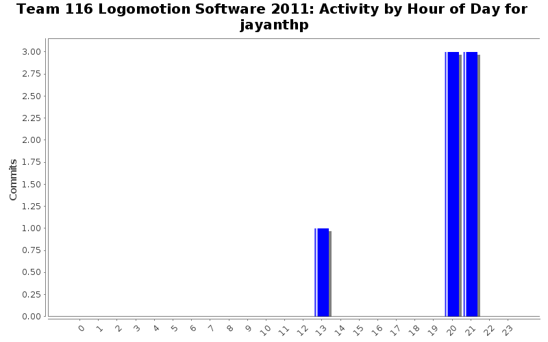
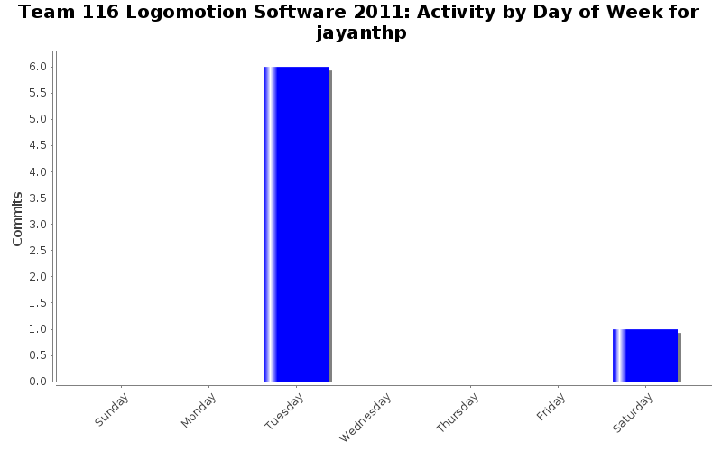
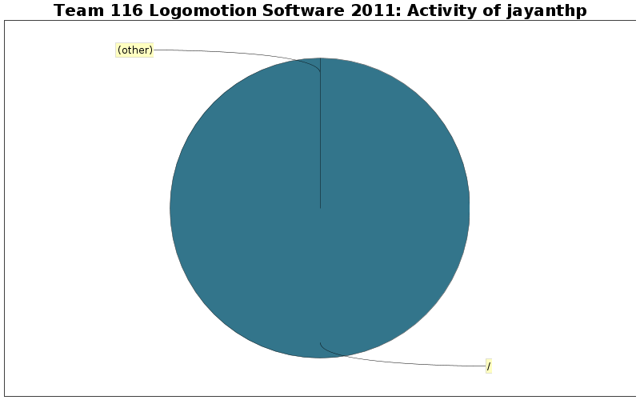

| Directory | Changes | Lines of Code | Lines per Change |
|---|---|---|---|
| / | 7 (100.0%) | 156 (100.0%) | 22.2 |

added all of the autonous stuff done as of right now(for saving purposes)
130 lines of code changed in 1 file:
made changes and updates to access gear changer and added the goto_point_relative command
9 lines of code changed in 3 files:
8 lines of code changed in 1 file:
added a canJaguar to access
1 lines of code changed in 1 file:
added the drive_straight command
8 lines of code changed in 1 file: